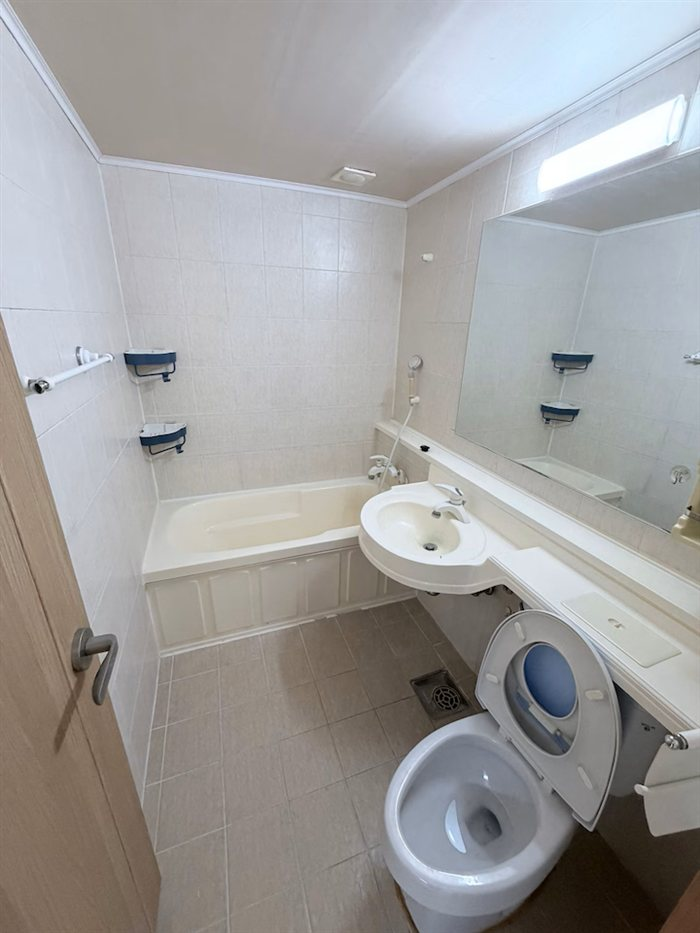
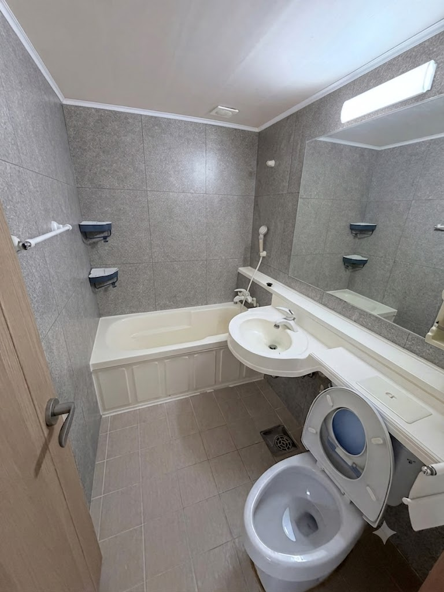
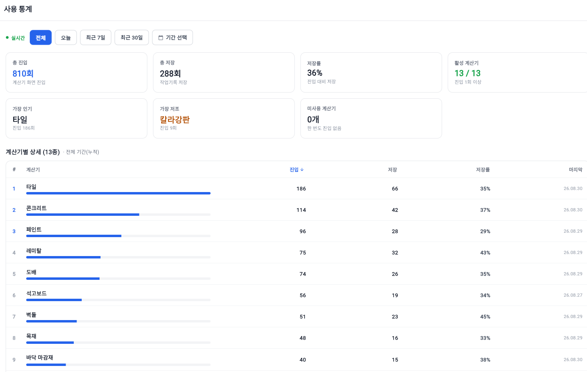
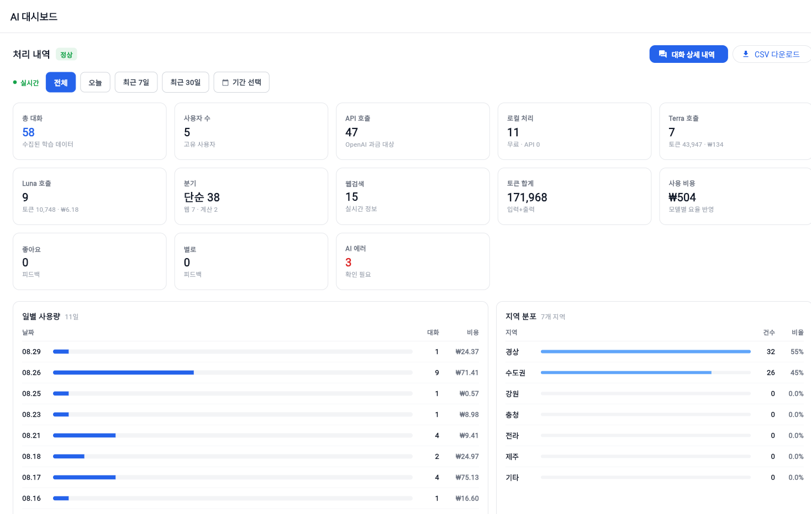

현장에서 확인한 문제로 시작했습니다
시작은 제가 인테리어를 맡겨본 일이었습니다. 시공하시는 분들은 아직도 종이와 머릿속으로 계산하고 계셨습니다. 왜 앱을 안 쓰시냐 여쭤보니 "있어도 쓸 이유가 없다", "머릿속으로 다 된다"는 답이 돌아왔습니다. 찾기도 어렵고, 있어도 자재마다 따로 놀고 값이 안 맞는다는 뜻이었습니다. 맡긴 쪽에선 확인할 방법이 없어 넘어갔고, 끝나면 쓰고 남은 자재를 실어 가셨습니다. 그 장면이 걸려서 몇 달 동안 현장을 따라다녔고, 거기서 본 것을 정리했습니다. 그렇게 말씀하셨던 분들이 지금은 제일 잘 쓰십니다.
문제 정의에서 시작해 데이터로 확인했습니다
기능을 먼저 늘리지 않았습니다. 현장에서 문제를 정의하고, 거기서 검증할 가설을 세웠습니다.
현장에서 시간과 비용이 새는 지점
- 현장 기록의 취약성 · 현장 노트가 물에 젖어 계산·기록이 유실되거나, 정작 필요할 때 노트를 안 가져와 이전 내역을 확인하지 못하는 일이 잦습니다. 반면 휴대폰은 다들 늘 가지고 계신데, 정작 일에는 안 쓰시더라고요.
- 계산·기록의 비효율 · 면적·수량·로스율 계산이 계산기·엑셀·수첩에 흩어져 있어 매번 도구를 바꿔가며 작업하고 결과를 따로 옮겨 적어야 합니다. 장갑을 끼거나 양손이 바빠 입력 자체가 번거롭고, 눈대중으로 넘어가 과부족 발주·재작업으로 이어집니다.
- 견적이 늦어지는 문제 · 현장에서 잰 값을 사무실에서 다시 정리해야 견적이 나옵니다. 고객은 당일에 답을 못 받는 경우가 많고, 견적을 받기까지 빠르면 다음 날, 늦으면 사흘까지 걸립니다.
- 소통·실측의 한계 · 현장은 지역 방언·은어('헤베', '사메다' 등)로 소통해 기존 AI 앱은 질문을 잘 알아듣지 못하고, 실측은 수기나 외부 스캐닝에 의존해 비용·정확도에 한계가 있습니다.
계산·기록·상담·일정을 하나로 묶으면 계속 쓸 것이다
현장 규격(면적·치수)만 입력하면 KS 규격·표준품셈 기반으로 자재 수량과 견적을 자동 산출하고, 계산·기록·상담·일정을 하나로 묶어주면,
계산 시간과 오차·손실이 줄어 작업자가 계속 사용할 것이다.
지표를 정하고, 작게 만들어 내놓았습니다
무엇을 보고 성공을 판단할지 먼저 정한 뒤, 가장 작은 형태로 만들어 실제 현장에 내놓았습니다.
무엇을 보고 성공을 판단할 것인가
가설 검증 지표로 '계산 → 작업기록 저장 전환율'과 '재사용(리텐션)'을 정했습니다.
전체 지표 체계는 아래 '지표는 세 종류로 나눠서 본다'에서 정리했습니다.
핵심 기능만 담아 먼저 내놓았습니다
전 기능을 다 넣지 않고 핵심 자재 계산기 + 업무수첩(작업기록·메모)만 붙여 iOS·Android에 작게 출시했습니다.
- 직접 인테리어·건축 시공현장에 나가 보고 들으며, 시공자들이 실제로 쓰는 계산법과 노하우를 받아 공식값으로 넣었습니다. KS 규격에 어긋나지 않는지 확인한 값만 반영했습니다.
- 로컬 데이터 저장을 기반으로 오프라인에서도 문제없이 사용 가능하도록 설계했습니다. 현장은 인터넷이 안 되는 경우가 비일비재하기 때문입니다.
- 유입도 SNS 릴스로 작게 검증했습니다. 광고는 일주일만 돌리고 껐고, 집행한 금액은 10만원이 전부입니다.
수도권이 아니라 경북 포항·경주에서 시작했습니다
큰 시장부터 두드리는 대신, 시공자와 자재상이 서로 이름을 아는 동네에서 먼저 확인하기로 했습니다.
서로 아는 사이에서 시작합니다
타일·도기 도소매점, 건재상, 목재소, 철물점과 지역 시공자는 매일 얼굴을 봅니다. 자재상 계산대 옆에 놓인 배너 하나가 소개로 이어지는 동네입니다.
현장에 같이 나갔습니다
시공 반장님들을 직접 만나 이야기를 듣고, 실측에 동행했습니다. 손에 익지 않는 화면과 어긋나는 로스율은 그 자리에서 받아 적어 고쳤습니다.
여기서 되면 어디서든 됩니다
거점에서 쌓인 실제 작업 시간 데이터를 그대로 다음 지역에 가져갑니다. 숫자가 아니라 쓰던 사람의 말이 따라옵니다.
면적이 아니라 발주 단위로 답합니다
m²만 알려주는 계산기는 결국 다시 계산하게 만듭니다. 공셈이는 건재상에 그대로 주문할 수 있는 단위로 답합니다.
발주 단위로 변환
헤베·평으로 끝내지 않고 실제 주문 단위까지 계산합니다.
타일 박스 · 석고보드 3×6, 3×8 장 · 다루끼 단 · 도배 롤 · 페인트 말, 통부자재까지 같이
본자재만 뽑아두면 결국 현장에서 한 번 더 셉니다. 붙는 것까지 함께 산출합니다.
드라이픽스 · 줄눈제 포대 수 · 피스 · 본드문·창은 자동으로 빼고
현장 계산에서 실수가 가장 많이 나는 지점입니다. 개구부를 탭 한 번으로 순면적에서 제외합니다.
쓰던 폰 그대로
기기마다 스캔 방식은 다르지만 나오는 값은 같습니다. 라이다가 있으면 방을 훑는 것만으로, 없으면 카메라로 짚어가며 잽니다.
iOS · 안드로이드 모두 지원기종 때문에 못 쓰는 일 없이 출시 예정
작게 만든 MVP만으로 실사용 수요를 검증했습니다
광고는 일주일만 돌리고 껐습니다. 10만원으로 한 달 만에 실사용자가 모였고, 지금은 유튜브 알고리즘을 타고 광고 없이도 매일 늘고 있습니다.
 YOUTUBE SHORTS
광고를 껐는데도, 이런 영상이 계속 사람을 데려옵니다
영상 보러가기
YOUTUBE SHORTS
광고를 껐는데도, 이런 영상이 계속 사람을 데려옵니다
영상 보러가기
사흘 걸리던 견적이 그 자리에서 나옵니다
기능이 하나 늘어난 게 아니라, 견적에서 계약까지 가는 순서 자체가 짧아졌습니다.
- 1견적 요청
- 2현장 실측 · 고객 요청사항과 자재 확인
- 3자재 실물이나 샘플을 보여드리고 다시 연락
- 4사무실에서 자재별 단가 찾아가며 견적서 작성
- 1견적 요청
- 2현장 실측
- 3그 자리에서 견적 안내 · 자재를 입힌 이미지까지 함께
- 4계약 체결 · 일정 조율 · 시공
말로 설명하지 않아도 됩니다
자재를 입힌 화면을 같이 보면 고객이 바로 이해합니다.
설득하는 자리가 고르는 자리로 바뀝니다.
다음 날 바로 착수합니다
고쳐야 할 부위의 자재 수량이 현장에서 잡히니 발주가 그날 나갑니다. 대기 없이 이어집니다.
"계산이 다 보이면 시공자가 손해 아닌가요?"
가장 많이 받는 질문입니다. 단가가 드러나면 깎이니 현장에서 반발이 클 거라는 이야기인데, 실제로는 반대였습니다.
투명해지면 손해라는 건 계약이 이미 성사됐다고 가정할 때 이야기입니다.
현장에서 실제로 새던 건 깎인 단가가 아니라, 설명이 길어져 흐지부지된 계약과 남아서 버려지던 자재였습니다.
개구부를 빼고 발주 단위로 정확히 뽑으면 여유분을 무리하게 잡을 이유가 없어집니다.
고객은 근거를 보고 빨리 결정하고, 시공자는 안 쓰는 자재를 사지 않습니다.
양쪽 다 남는 구조라 현장에서 먼저 받아들였습니다.
계약 체결 증가율은 거점 시공팀이 공셈이 도입 전후를 비교해 알려준 수치이며, 표본이 크지 않은 현장 응답 기준입니다.
검증한 화면과 지금 만들고 있는 화면
먼저 내놓은 계산·기록 화면으로 수요를 확인했고, 그 위에 공간 스캐닝과 마감재 시뮬레이션을 얹고 있습니다.

자재 계산기 · 업무수첩
MVP로 먼저 내놓은 화면입니다. 면적·수량·로스율 계산과 작업기록을 한 손으로 처리합니다.

공간 스캐닝 · 실측
벽·바닥·천장 구조와 치수를 자동으로 읽어 2D 도면·3D 모델로 바꾸고, 자재 계산까지 바로 잇습니다.

시공 전
시공 후 적용한 자재
밀란 그리지오
적용한 자재
밀란 그리지오
마감재 시뮬레이션
벽면 사진에 원하는 자재를 입혀 시공 결과를 미리 보여줍니다. 고객의 자재 선택을 그대로 거래로 잇는 기능입니다.
새로 짓는 시장이 아니라, 고쳐 쓰는 시장입니다
신축 경기는 꺾였지만 노후 주택은 계속 늘고 있습니다. 부분 시공과 개보수 수요가 시장을 끌고 갑니다.
2030년 약 46조원, 연평균 약 7% 성장 전망
재건축 대신 욕실·주방·도배 같은 부분 시공으로
공셈이가 매일 마주하는 사람들입니다
공셈이는 소비자용 견적 매칭 서비스가 아닙니다. 전국 약 4.5만 개 시공 사업체(실내건축 면허 2,543개소 + 1,500만원 미만 경미공사 비면허 약 4.2만 개소)와 그 안의 실무자가 매일 손에 쥐고 쓰는 도구를 만듭니다.
시장 규모·성장 전망은 한국건설산업연구원(CERIK) 지표 연계 추정, 종사자·사업체 수는 통계청 전국사업체조사 및 공공데이터 기준입니다.
시장을 세 겹으로 나눠서 봅니다
전체 시장에서 우리가 실제로 닿을 수 있는 범위를 추리고, 그중 먼저 가져올 범위를 다시 좁혔습니다.
TAM·SAM은 한국건설산업연구원(CERIK) 지표와 통계청 전국사업체조사를 바탕으로 환산한 추정치이며, SOM과 단계별 수치는 확정된 실적이 아니라 목표치입니다. 앞서 나온 1,000명은 누적 다운로드로, 유료 구독자 수와는 다른 지표입니다.
검증된 경험 위에 단계적으로 확장합니다
기능을 얹을 때마다 "이 기능이 목표 지표를 움직이는가?"를 먼저 묻습니다.
- 음성 AI 비서 '공담이' · 지역 방언·구어체·현장 용어까지 이해하도록 특화. 자체 LLM과 외부 LLM API를 함께 쓰는 하이브리드 구조.
- 하이브리드 라우팅·프롬프트 캐싱으로 질의당 원가 절감, 방언 정규화·의도 분류 등은 자체 소형 LLM으로 전환 예정.
- 글로벌 다국어 버전 · 영어 지원 출시 완료. 국내 외국인 근로자 수요에 대응합니다.
- PC 버전 출시 26.09 예정
- 홍보문구 자동 작성 · 네이버 블로그·인스타그램 연계로 앱에서 글·피드 자동 생성.
- AI 견적서·업무일지 자동 작성
- 세금계산서 발행 등 행정 업무 · 정부 사이트에 따로 들어갈 필요 없이 앱에서 처리 (정부 API 연계).
- 자체 공간분석·도면화 기술 · 벽·바닥·천장·개구부 구조와 치수를 자동 인식해 2D 도면·3D 모델로 변환.
- 외주 대비 비용 절감 · 도면 건당 43만 원, 3D 투시도 3~5만 원.
- 마감재 시뮬레이션 · 현장 사진에 자재를 입혀 시공 결과를 미리 보여주고 거래로 잇습니다.
- 계산·기록에서 시작해 견적·거래·행정까지 하나로 잇는 종합 업무 플랫폼으로 확장.
- 수출을 통한 해외 시장 확장 · 미국 야드파운드법·ASTM, 유럽 미터법·EN/유로코드, 일본 JIS 등 지역별 단위·규격 반영.
위 스택은 상업 사용이 가능한 라이선스(MIT · Apache 2.0 · BSD)만 채택합니다. 비상업·연구용 라이선스는 배포 대상에서 제외합니다.
지표는 세 종류로 나눠서 봅니다
성장 지표만 보면 오계산·오인식 같은 예외 상황을 놓칩니다. 자재 수량을 다루는 제품이라 계산·생성 신뢰성을 별도 안전선으로 관리합니다.
Primary Metric
- 계산 → 작업기록 저장 완료율
- 주간 재사용(리텐션)
Supporting Metric
- 자재 계산 소요시간
- SNS 유입 → 설치 전환
- 무료 → 유료(PRO/프리미엄) 전환율
- AI 홍보문구 생성 → 실제 게시 전환
Guardrail Metric
- 자재 계산 오류율
- 음성(공담이) 방언·용어 오인식률
- AI 홍보문구의 과장·허위 표현 발생률
- AI 결과 과도 수정률
- 이탈률
자재 수량을 다루고 자체 LLM으로 전환해가는 AI 제품에선 계산·생성 신뢰성이 특히 중요합니다.
앞의 지표는 목록이 아니라 매일 열어보는 화면입니다
정의만 해두고 보지 않으면 지표가 아닙니다. 계산기 사용과 AI 처리를 각각 관리자 화면에서 직접 계측하고 있습니다.

크게 보기계산기 사용 통계
Primary Metric으로 잡은 '계산 → 작업기록 저장' 전환이 곧 이 화면의 저장률입니다. 계산기별로 어디까지 쓰이는지, 한 번도 안 쓰인 게 있는지까지 봅니다.

크게 보기AI 대시보드
대화 한 건마다 어느 모델로 갔고 토큰과 비용이 얼마였는지 남깁니다. 단순한 질문은 로컬로 빼서 API 비용을 눌러두고, 에러는 따로 세워 Guardrail로 봅니다.
계산은 무료로, 필요한 만큼만 확장하세요
핵심 자재 계산은 무료로 쓸 수 있습니다. 공간스캐닝·2D/3D·행정 업무는 해당 기능 출시에 맞춰 프리미엄으로 제공될 예정입니다.
- 자재 계산기
- 업무수첩 · 현장 메모
- 현장 캘린더
- 음성 AI 비서 '공담이'
- 프로모드 계산
- 무제한 이력 관리
- 공간스캐닝 · 2D 도면 · 3D 모델
- 자재 계산 연계
- 견적서 · 업무일지 · 세금계산서 등 행정 업무
처음 이름은 '공간작업실'이었습니다
공간에서 작업하니까 공간작업실. 그때는 그 이름이면 충분하다고 생각했습니다.
그런데 투자사(VC)들을 만나면서 같은 말을 반복해서 들었습니다. "이름만 봐서는 이 앱이 뭘 하는 앱인지 모르겠다." 공간을 다룬다는 건 담겼지만, 정작 현장에서 무엇을 해주는지가 빠져 있었습니다.
단순한 명칭 교체가 아니라 서비스의 방향성을 명확히 하기 위한 결정이었습니다. '공간작업실'의 정체성은 이어가면서 '시공현장을 위한 AI 업무 파트너'라는 지향점을 이름에서부터 전달합니다. 자재 계산으로 들어오더라도 단순 계산기 앱에 머물지 않고, 현장 업무 생산성을 높이는 플랫폼으로 확장해 나갈 기반입니다.
먼저 계산부터 가볍게 시작해보세요
자재 계산과 업무수첩은 무료입니다. 기본 업무에 필요한 계산기를 이용해보세요. 출시하자마자 1,000명 이상이 선택한 앱, 지금 설치해보세요.